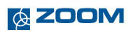
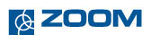

Hangrögzítő megoldások
Bármely vállalat életében a kommunikáció mindennapos tevékenység. Nem csak "egymással", hanem az ügyfelekkel, partnerekkel is folyamatosan kommunikálunk, és információt cserélünk. Ennek minősége közvetve és közvetlenül is hatással van egy cég életére, sikereire, eredményeire.
A kommunikáció nagy része még ma is "hanggal történik", az esetek egy részében személyesen, de egyre nagyobb részében telefonon, interneten keresztül.
Az ügyfélkezelés, minőségbiztosítás fontosságának térnyerésével egyre fontosabbá vált, hogy az ügyfelekkel történő kommunikáció követhető, ellenőrizhető, visszakereshető legyen.Ebben nyújtanak segítséget a hangrögzítő megoldások.
Együttműködő partnerünk, az Euronet folyamatosan figyelemmel kísérte és alkalmazta is ezen technikákat, technológiákat. Tapasztalatok állnak rendelkezésre az egyszerű hangrögzítő megoldásoktól az összetett, multinacionális vállalat működésébe integrált ügyfélkezelési rendszerekig. Ezek alapján jelenleg két gyártó termékeit alkalmazzuk, illetve ajánljuk ügyfeleinknél: DSR, ZOOM.
A DSR ismert magyar gyártó. Széles kínálattal lefedi a hangrögzítő piac igényeit. Megoldást kínál hangrögzítésre akár fő-, akár mellékoldalon, analóg, digitális és IP mellékek esetén is.
A ZOOM termékek Csehországban készülnek. Ezek a hangrögzítő megoldása elsősorban a Cisco Call Manager termékekhez kerültek kifejlesztésre.
 
